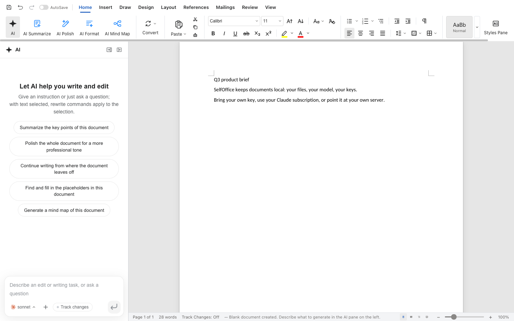
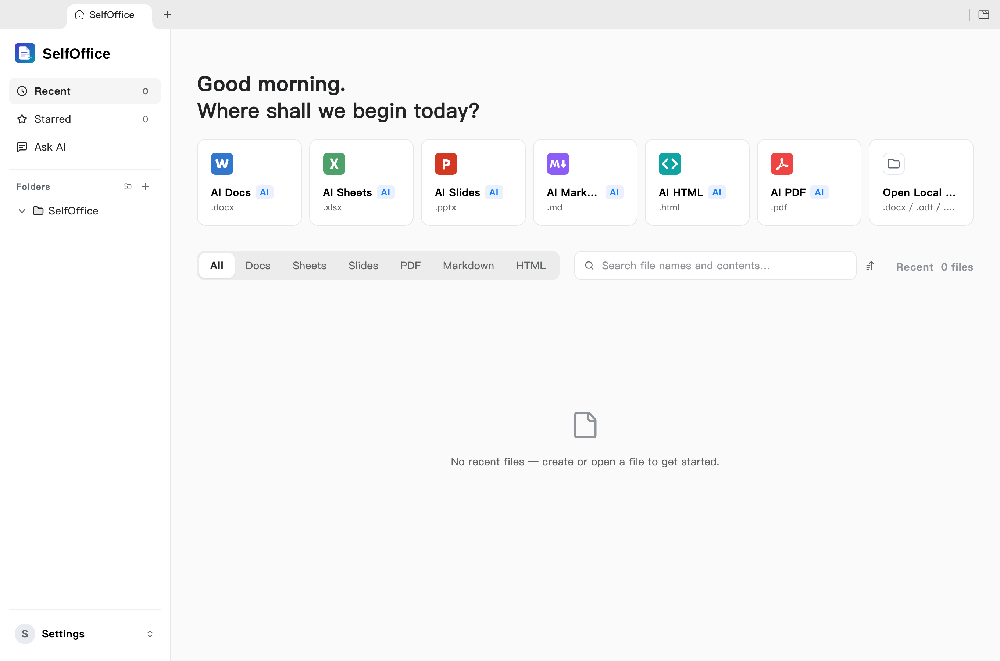
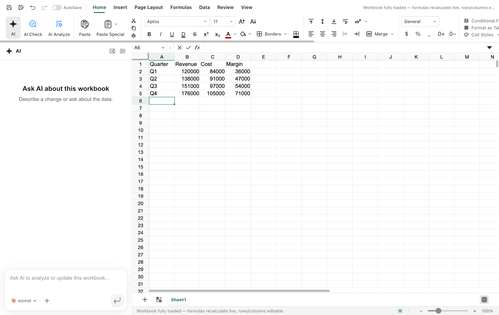
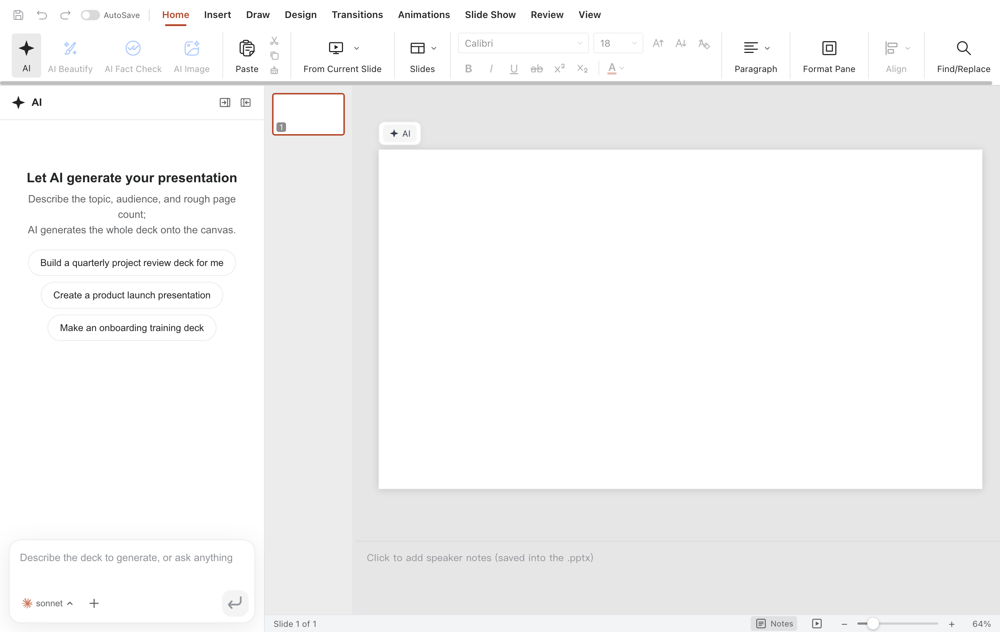

The AI edits, you review
Tracked changes in Docs, live formulas and charts in Sheets, slides drawn on the canvas. Every AI turn is a snapshot you can roll back.
Docs, Sheets, Slides, PDF, Markdown and HTML in one native app. The AI edits the real file, with tracked changes you can roll back. Use your Claude subscription, your own API keys, or a model on your own machine.
macOS, Windows and Linux. Free. No account.

Works with the models you already use
Features
Tracked changes in Docs, live formulas and charts in Sheets, slides drawn on the canvas. Every AI turn is a snapshot you can roll back.
Every edit, save and conversion runs on your machine. Nothing is uploaded unless you point a model at it.
Native .docx, .xlsx and .pptx. What you did not
touch is copied byte for byte.
Edit text inside the page. Convert PDF to Word, Excel or PowerPoint on the device, with system OCR for scans.
Local full-text search over your folders. Star the files that matter and ask in plain language: answers cite their source.
A selfoffice command line, an agent skill and an MCP server hand every
engine to Claude Code, Codex, Cursor and other agents, still on-device.
One window, six apps



Models
The fork removed every hosted dependency of the original. What is left is a picker.
Runs claude -p with the login you already have, found through your shell
PATH (mise, nvm and volta installs work). No API key. The CLI gets no tools and no
project context, it is only a text model.
Claude, OpenAI, Gemini, DeepSeek, Kimi, GLM, Qwen, Doubao, MiniMax, Grok, Mistral, OpenRouter and more.
15+ providersUse your ChatGPT login through the Codex app-server.
no keyAny OpenAI-compatible URL: Ollama, LM Studio, vLLM or your own gateway.
fully localWeb search works out of the box with a keyless chain, and you can add Serper, Tavily, Exa and others per capability.
New in this fork
Open an .odt, .ods or .odp, edit it, save to the
same file. Not an export: only what you changed is rewritten, and the rest of the
package stays byte-identical. Comments, tracked changes, charts and animations the
editor does not handle survive the save.
If a change cannot be patched safely, the original is backed up first and you are told. If the file changed on disk behind your back, SelfOffice refuses to overwrite it.
# convert from the terminal
selfoffice convert report.docx --to odtOpen development
This fork follows GenOffice upstream by itself, so new features reach you without waiting for a person.
Download
Latest release
xattr -dr com.apple.quarantine /Applications/SelfOffice.app.
Or build from source:
git clone https://github.com/tcsenpai/selfoffice && npm ci && npm run
build:all
FAQ
Yes. The code is Apache-2.0 and there is no account or subscription. You only pay a model provider if you choose a paid one, or nothing if you use a local model.
No analytics, no telemetry, no hosted backend. A document leaves your machine only when you ask the AI about it, and only to the provider you configured. With a local endpoint nothing leaves at all.
None to open and edit files. For the AI features pick one: your Claude subscription
through the claude CLI, an API key, the Codex CLI, or any OpenAI-compatible
server such as Ollama.
It is a fork. We removed the Genspark sign-in, proxy, cloud tools and analytics, added the Claude subscription and bring-your-own-key providers and real OpenDocument support, and keep merging upstream improvements.
Code signing costs money, and a signing path for Windows open source is still being set up. The source and the release workflow are public, so you can verify or build it yourself.